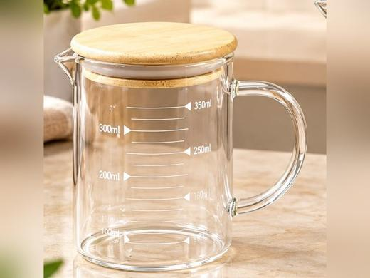
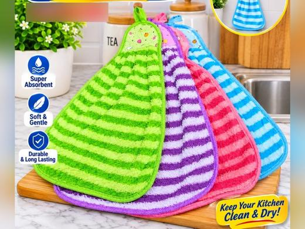
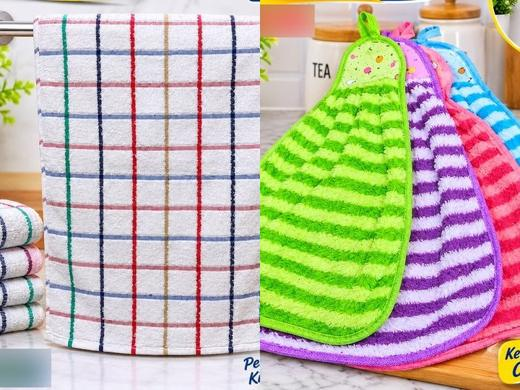
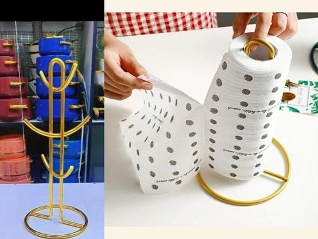
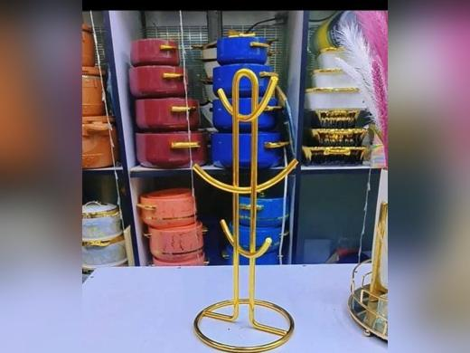
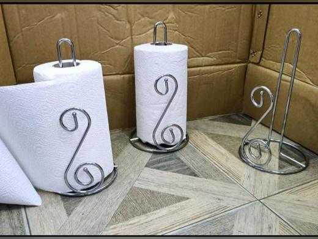

Shop › Dish racks & kitchen accessories
Dish racks & kitchen accessories in Kenya
Dish racks and kitchen accessories in Kenya: above-sink dish racks, measuring jugs, kitchen towels, towel holders, mug trees and scoops.
Open dish racks & kitchen accessories in the shopDish racks · Kitchen tools & gadgets · Measuring jugs · Kitchen towels & holders · Soap pumps
Dish racks (2)


Kitchen tools & gadgets (4)

Stainless ice scoop, small (1283-3)from KES 490

Wing wine opener (8806)KES 690

Pizza & dough cutter, bamboo handle (MJ-XH029)KES 390

Stainless lemon squeezer (767)KES 450
Measuring jugs (4)

Glass measuring jugs, both sizesKES 2,390

Glass measuring jug 500mlKES 1,350

Glass measuring jug 350mlKES 1,190

Stallion measuring jug 1.5LKES 250
Kitchen towels & holders (8)

Cotton kitchen towels, pack of 3KES 990

Hanging kitchen towels, pack of 4KES 590

Kitchen towel comboKES 1,290

Gold kitchen pairKES 1,490

Gold mug treeKES 990

Under-shelf double roll holderKES 690

Gold kitchen towel holderKES 590

Steel kitchen towel holderKES 490